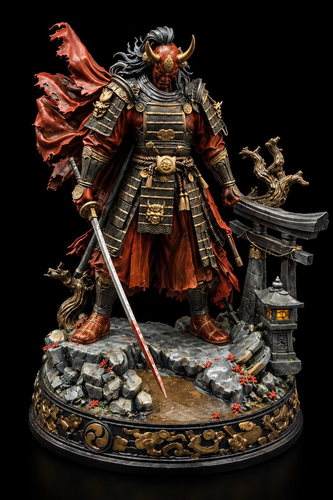

Samurai Oni – Deluxe Edition
Inclusief btw · Circa 17 cm · Handgeschilderd · Op bestelling
Een indrukwekkend verzamelbeeld met demonisch Oni-masker, gedetailleerd samurai-pantser, rode mantel, katana en Japanse displaybasis.
Een indrukwekkend verzamelbeeld vol karakter
Breng kracht, mystiek en vakmanschap samen met deze Samurai Oni – Deluxe Edition van Makers 3D Labs.
Dit gedetailleerde beeld toont een imposante Oni-krijger in zware samurai-uitrusting, met een demonisch masker, verweerde rode mantel, katana en een sfeervolle displaybasis vol decoratieve Japanse elementen.
De combinatie van donkere pantserdelen, rode accenten, verweerde steentexturen en goudkleurige details zorgt voor een luxe en krachtige uitstraling.
Elk exemplaar wordt met precisie in hoogwaardige resin 3D-geprint en zorgvuldig met de hand geschilderd en afgewerkt. Hierdoor is ieder exemplaar bijzonder.
Your idea. Made possible.
Productspecificaties
- Circa 17 cm hoog
- Hoogwaardige 3D-printresin
- Handgeschilderde afwerking
- Gedetailleerd samurai-pantser en Oni-masker
- Katana en verweerde rode mantel
- Inclusief decoratieve displaybasis
- Rotsen, lantaarn en Japanse elementen
- Alleen voor binnengebruik
- Decoratief verzamelobject, geen speelgoed
Productie en levering
- Op bestelling geproduceerd
- Gepersonaliseerd naamplaatje: + € 14,95
- Afwijkende kleuraccenten: + € 19,95
- Premium extra beschermlaag: + € 9,95
- Verzendkosten apart berekend
- Levertijd: binnen maximaal 30 dagen na bestelling
- Kleine verschillen in kleur, schaduwen en details zijn mogelijk
Levertijd en bedenktijd
Levertijd: binnen maximaal 30 dagen na je bestelling. Verzending met PostNL of DHL, met track & trace.
Maatwerk: kies je voor personalisatie (naam, tekst, logo, eigen ontwerp of eigen maat), dan wordt het product speciaal voor jou gemaakt en geldt geen herroepingsrecht (art. 6:230p sub f BW). Zonder personalisatie heb je 14 dagen bedenktijd na ontvangst. Zie de algemene voorwaarden en het modelformulier voor herroeping.
Productveiligheid en fabrikant
Fabrikant: Makers 3D Labs (handelsnaam van Bruwin Solutions), Houtzaagmolen 96, 2986 GE Ridderkerk, Nederland · info@makers3dlabs.nl · KvK 42219037 · Btw-id NL005594435B45
Waarschuwingen en gebruik:
- Decoratief product van uitgehard kunsthars. Geen speelgoed.
- Niet geschikt voor contact met voedsel.
- Bevat mogelijk kleine onderdelen: niet geschikt voor kinderen onder 3 jaar.
- Niet blootstellen aan hoge temperaturen (boven ca. 50 °C) of langdurig fel zonlicht; het materiaal kan vervormen of verkleuren.
- Handbeschilderde delen alleen droog of licht vochtig afnemen.
Elk product wordt in Nederland op bestelling gemaakt. Vragen over veiligheid of een melding? Mail ons via info@makers3dlabs.nl.